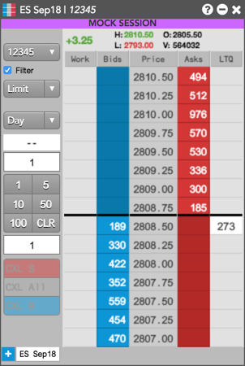

To support mock trading, TT® provides a separate trading environment at mock.trade.tt that is accessible through your browser or TT Desktop. Mock trading is different from regular certification testing as it is done using production connectivity and equipment, and is conducted outside of production trading hours.
Exchanges often require their customers to participate in mock trading sessions to test and verify new products, features, or functionality added to their API or electronic trading platforms. Mock trading in multiple markets may also be necessary to support industry wide initiatives.
Note: Before participating in a mock trading session, you should review the related TT Customer Advisory regarding the upcoming session, and contact the exchange or other entity (e.g., FIA) conducting the session for more details.
You can log in to mock.trade.tt using your existing TTID credentials.
When you log in to mock.trade.tt, your workspaces from the Live and Simulation environments will not be available to use. Conversely, the workspace that you create for mock trading will not be available for use in the Live and Simulation environments.
To use your Live or Simulation environment workspaces for mock trading, you can export the workspace from Live/Simulation then import it into mock.trade.tt using the workspace importing and exporting functionality available in TT.
Note: If you import a workspace, any widgets or features in the workspace that are unsupported for mock trading will be filtered out when you open the workspace in mock.trade.tt.
After you open your workpsace, you'll notice each open widget in the workspace includes a Mock Session banner.

When trading, the TT mock trading environment only displays and supports mock prices, orders, fills, and positions. Orders can only be accepted on connections to the exchange's mock trading environment, and only when the scheduled mock session is active. Your trading activity in the mock session does not impact your trading in the TT Live or Simulation environment.
The following TT functionality is not available in the mock trading environment:
If you are required to change any user, account, or connection settings in order to participate in a mock trading session (e.g., change the IP and/or Port to connect to an exchange DR site), you'll need to make the changes using Setup in the Live production environment. To access Setup in Live while logged in to mock.trade.tt, click File | Open user setup from the workspace menu bar.
Note: If you don't want to keep the Setup changes made specifically in the Live environment for a mock trading session, you'll need to manually revert the changes after the mock session is completed.
The TT® Support Center may also be available on Saturdays for mock trading support (refer to your CA, if applicable). TT Support contact information is as follows: